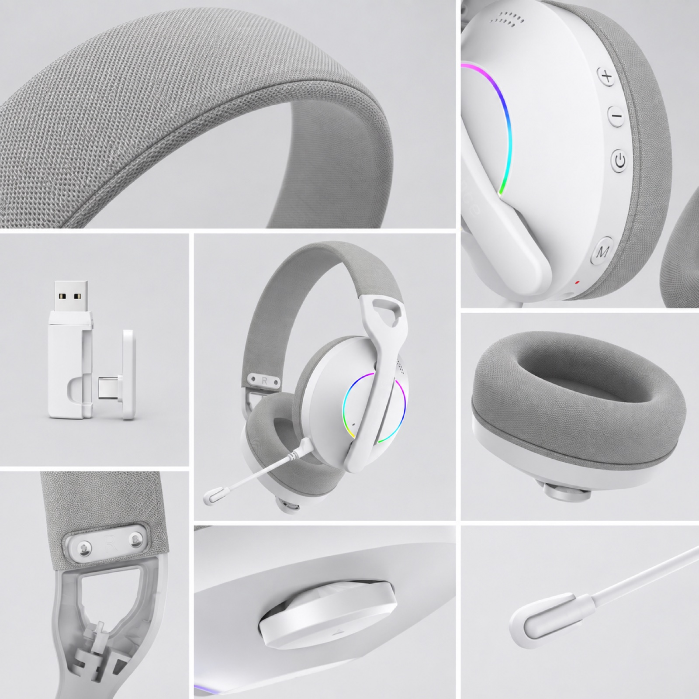
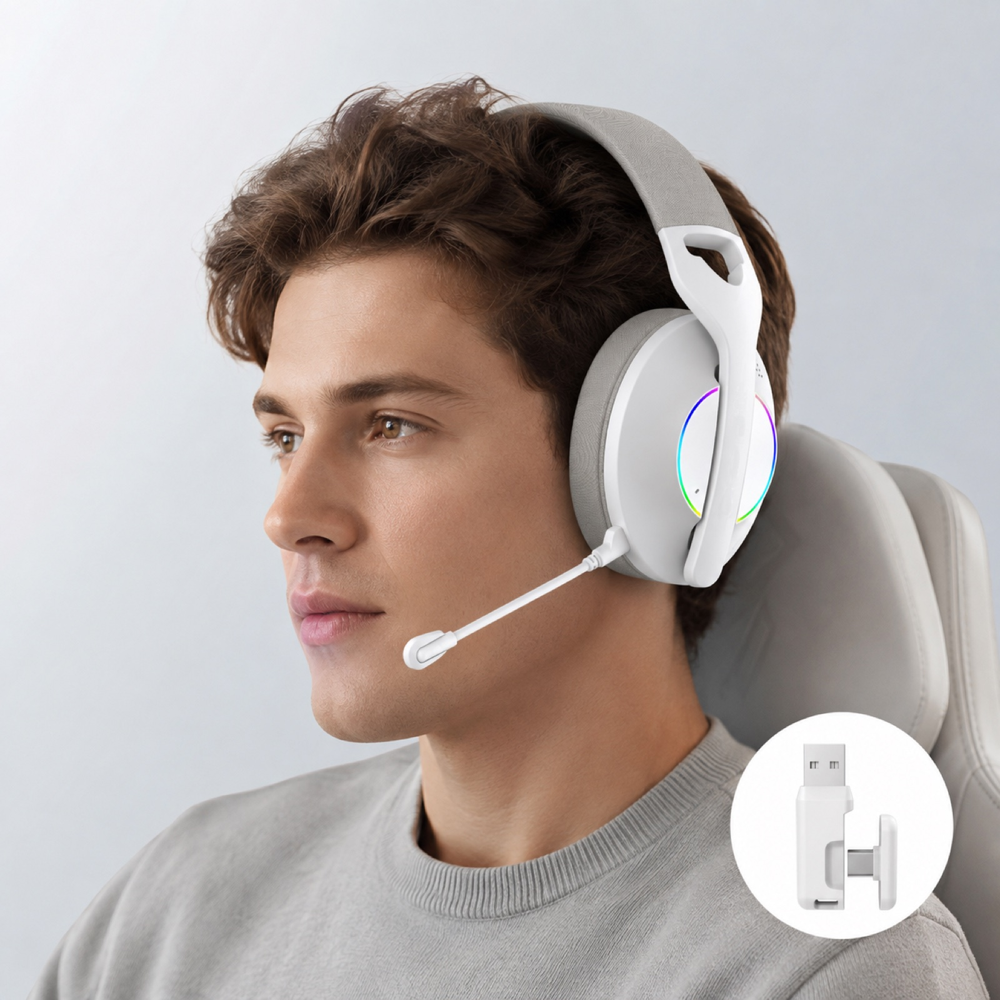
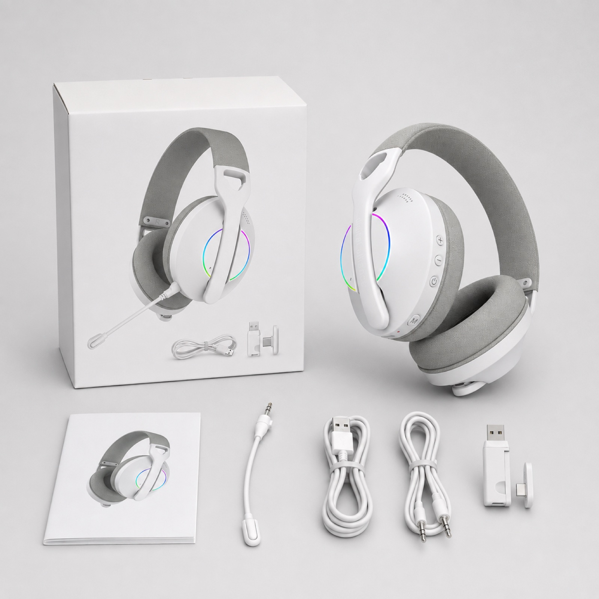

1. Confirm the exact material
Ask whether the approved sample uses PU, knit, mesh, fabric or a mixed construction. Keep the material callout tied to the model and final sample version.

Gaming headset sample guide
A cushion can feel soft in your hand and still be the wrong fit during a game. Fabric and PU describe the contact surface; memory foam describes the filling. Compare the whole cushion on the actual headset before choosing a material for your brand.

Surface, filling and fit
Ask for both the contact material and the filling. A photo, a soft first touch or a memory-foam label does not establish comfort over a session, cooling performance or replacement compatibility.
Try a comparable wear check: use the same reviewer, room, glasses if normally worn and agreed session length. Record heat, contact points, fit and listening observations for each sample. This is a proposed buyer check, not a completed comfort or cooling test.
Download the blank headset sample review sheet to keep fit and comfort observations with the selected version. Mark anything you did not check as "Not tested".
Seven checks
The same checklist should be applied to every shortlisted model so the material decision is comparable across samples.
Ask whether the approved sample uses PU, knit, mesh, fabric or a mixed construction. Keep the material callout tied to the model and final sample version.
Check the foam profile, opening size, seams, edge finish, attachment method and whether the cushion can be replaced without damaging the earcup.
Check clamp, pressure points, ear coverage, headband contact and comfort after a realistic session rather than a brief showroom try-on.
Compare the selected surfaces under normal use. Record whether buyers need a different material, foam feel or earcup depth for the target user.
Listen with the final cushion version fitted. A change in material, size or cushion fill can change the seal and should be tested rather than assumed.
Ask how the surface should be cleaned, how it should look after normal handling and whether replacement cushions are part of the proposed product plan.
State the material direction, color, accessory list, box presentation, manual language, target market, sample timing and any replacement-cushion expectation in the RFQ.
G936 reference
The supplied G936 Lightweight Gaming Headset image set shows a knitted fabric headband and ear cushions alongside its receiver, cables, microphone, packaging and wearing reference. Watch the official G936 ear-cushion comparison video for visual context, then confirm the final material and configuration on the approved sample.

The product page shows the supplied fabric, microphone, controls, receiver, cable set, packaging and use-scene evidence for review.

Confirm the receiver, cable, microphone, manual and packing-list details with the chosen sample before packaging decisions.
Ear cushion FAQ
Choose after reviewing the intended user, channel, cleaning expectations, sample fit, cushion construction and audio seal. Confirm the selected material on the approved sample.
Check texture, stitch quality, cushion recovery, skin contact, heat build-up, cleaning expectations, earcup fit, replacement fit and audio seal.
Cushion shape, material and fit can change the seal around the ear. Confirm the listening result with the final selected cushion version.
State the headset model, target market and channel, requested cushion material, color, logo direction, expected accessories, packaging needs, sample timing and service questions.
Memory foam is a type of filling; PU and fabric describe the outer contact surface. They can be combined. Confirm both layers on the selected headset; this guide does not establish the G936 foam specification.
Related pages
Share the model, intended user, target market, channel, desired cushion material, sample timing and packaging questions for a focused discussion.